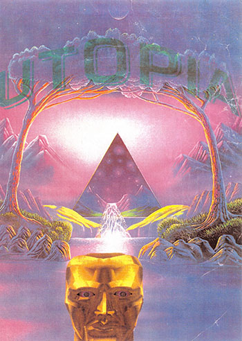

Electronic Music and the Raves
Rave music refers to the late 1980s/early 1990s genres of house, new beat, breakbeat, house, techno and hardcore techno, which were the first genres of music to be played at rave parties, or to any other genre of electronic dance music (EDM) that may be played at a rave.
The genre "rave", also known as hardcore by early ravers, first appeared amongst the UK "acid" movement during the late 1980s at warehouse parties and other underground venues, as well as on UK pirate radio stations. The genre would develop into oldschool hardcore, which lead onto newer forms of rave music such as drum and bass and 2-step, as well as other hardcore techno genres, such as gabber, hardstyle and happy hardcore. Rave music is usually presented in a DJ mix set, although live performances are not uncommon.
Raves have historically referred to grassroots organised, anti-establishment and unlicensed all‐night dance parties. Prior to the commercialisation of the rave scene, when large legal venues became the norm for these events, the location of the rave was kept secret until the night of the event, usually being communicated through answering machine messages, mobile messaging, secret flyers, and websites.
British politicians responded with hostility to the emerging rave party trend. Politicians spoke out against raves and began to fine promoters who held unauthorised parties. Police crackdowns on these often unauthorised parties drove the rave scene into the countryside. The word "rave" somehow caught on in the UK to describe common semi-spontaneous weekend parties occurring at various locations linked by the brand new M25 London orbital motorway that ringed London and the Home Counties. These ranged from former warehouses and industrial sites in London, to fields and country clubs in the countryside.